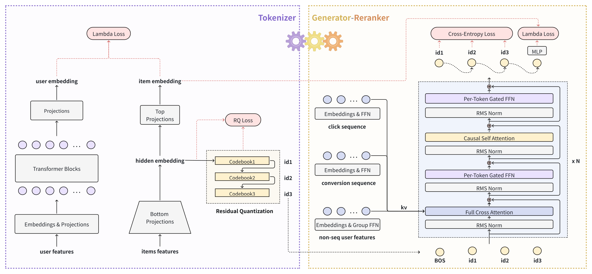
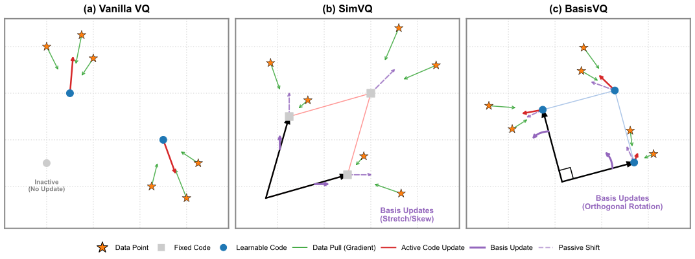
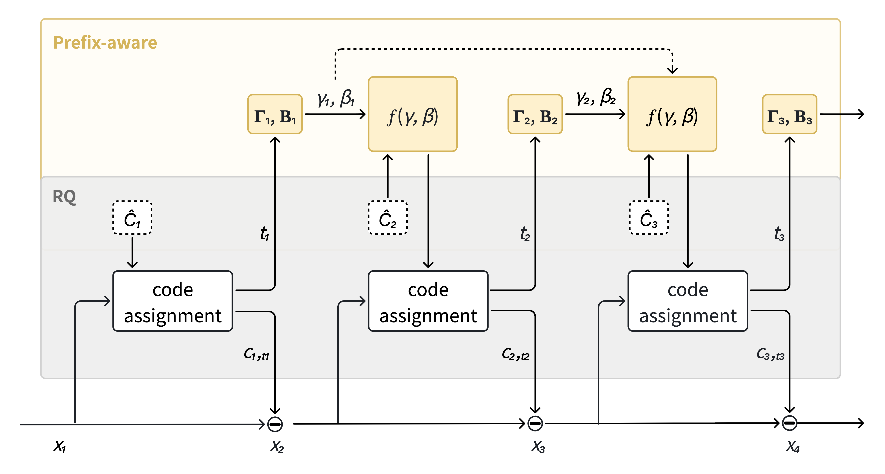
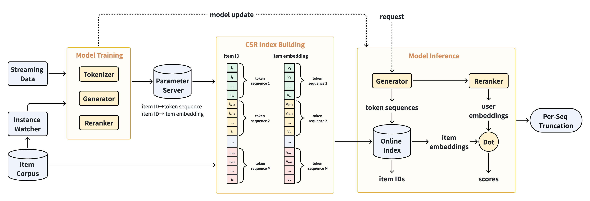
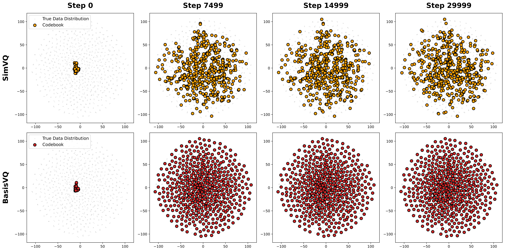

生成式端到端广告检索
在抖音
摘要
生成式检索将推荐重构为离散物品词元的生成。 然而，将该范式扩展到真实世界的推荐系统时，暴露出两个关键瓶颈： 1) 表示坍缩，即在连续分布漂移下，物品词元化器收敛到退化结果，从根本上阻碍了稳定的端到端适配。 2) 物品冲突，即海量候选池导致不同物品共享相同的词元序列，损害了最终检索精度。 关键在于，这两个瓶颈本质上是耦合的：扩大码本容量以缓解冲突，不可避免地会加剧坍缩。 为同时解决这两个问题，我们提出GEAR，这是一个联合优化词元化器、生成器和重排器的端到端框架。 为缓解表示坍缩，我们引入BasisVQ，它通过正交基对码本进行重参数化，以实现全局梯度共享和潜在空间的刚性空间旋转，从而在没有临时启发式方法的情况下有效稳定梯度动态。 我们进一步将其扩展为前缀感知的 BasisRQ，在相同的渐近时间复杂度下大幅增强码本的表达能力。 为解决物品冲突，GEAR 将上下文条件重排头集成到生成过程中，以极小的计算开销高效消解冲突物品的歧义。通过在端到端生成式框架内统一稳定词元化与联合重排，GEAR 建立了一个完全可微且可扩展的范式。 它目前服务于抖音广告数亿日活跃用户，在广泛的在线 A/B 测试中取得了显著的实证提升。
1 引言
生成式检索已在系列具有挑战性的场景中展现出成功(Rajput et al., 2023; Zhou et al., 2025a, b; Wang et al., 2026a; Yang et al., 2025b)。 与过去的范式不同，生成式检索将推荐重构为离散物品词元生成任务。 它采用物品词元化器将物品映射为词元序列，随后由词元生成器自回归地预测后续物品词元。 然而，当将该范式扩展到真实场景时，这一形式化引入了两个关键瓶颈。
第一个瓶颈是表示坍缩，这在计算机视觉中广为人知(Zhu et al., 2025; Mentzer et al., 2024)，但在生成式检索中被严重加剧。真实世界的推荐系统本质上是动态系统，随着新物品和用户兴趣的出现，会面临连续分布漂移。当通过流式数据上的直接反向传播更新词元化器时，这种严重的分布漂移会加剧 梯度不稳定，使码本陷入利用不足的次优状态。为规避这一问题， 先前的工作主要依赖冻结的词元化器(Zhou et al., 2025a, b; Xue et al., 2026)，或启发式策略(Zheng et al., 2025; Bai et al., 2025; Yan et al., 2026)，例如临时性的码重新初始化和指数移动平均（EMA）。然而，冻结的词元化器本质上无法适应连续分布漂移，而启发式方法仅能作为优化 稳定性的弱替代。从根本上说，缺乏一种有原则的稳定直接梯度优化方案，仍然是实现完全可微端到端学习的关键障碍。
第二个瓶颈是物品冲突，即海量候选池由于语义相似性或有限的码本容量，本质上会导致不同物品共享 相同的词元序列。传统的缓解策略将消歧推迟到后续的重排阶段(Sun et al., 2026; Zhou et al., 2024)，但会因计算开销或优化割裂而引入流水线瓶颈。近期工作提出追加唯一 词元(Rajput et al., 2023; Xue et al., 2026; Yang et al., 2025a) 以强制区分；然而，这会损害模型的泛化能力，因为唯一词元缺乏语义结构。 更重要的是，这两个瓶颈表现出 有害的耦合：扩大码本容量以缓解冲突，不可避免地会加剧表示坍缩(Zhu et al., 2025, 2024)。这种内在权衡使得孤立解决方案次优，因此需要一个统一框架来同时解决它们。
因此，我们提出GEAR，一个采用训练-服务协同设计的生成式端到端广告检索框架。 为缓解表示坍缩，我们引入BasisVQ，通过可学习的正交基对码本进行重参数化。从几何上看，优化该基会驱动整个坐标系的刚性旋转。这种拓扑保持的协同运动自然地恢复了未激活码的利用，并有效防止了词表退化。 我们进一步将其扩展为前缀感知的 BasisRQ，在保持渐近时间复杂度的同时提供了高表达能力的词表。 为解决物品冲突，GEAR 集成了一个轻量级重排头，直接复用生成器的自回归隐藏状态。该上下文条件头通过学习排序目标联合优化，以极小的推理开销实现冲突物品之间的细粒度消歧。
通过在统一框架内系统地解决表示坍缩和物品冲突，GEAR 为完全可微的 生成式检索提供了一种有原则的范式。我们通过大量离线评估和抖音广告平台上的大规模在线 A/B 测试验证了其鲁棒性和可扩展性。 此外，在系统性服务优化的支持下，GEAR 在生产环境中实现了大规模高效实时服务，支持数亿日活跃用户。
2 预备知识
令和分别表示用户集和物品集。对于 每个用户，我们利用其历史行为序列，并将其余特征（例如年龄和 设备类型）的集合记为。对于每个物品，我们通过一组 全面的特征来刻画它。注意，一般而言，同时包含静态 特征（例如多模态信息）和动态特征（例如具有可学习稀疏嵌入的类别 标识符）。这种混合特征空间本质上 要求在训练期间对物品表示进行动态适配。
3 GEAR
本节介绍 GEAR（图1），这是一个为训练和服务协同设计的端到端生成式检索框架。以下小节描述其联合优化的词元化器、生成器和重排器，随后给出训练和服务细节。

3.1 词元化器
在本小节中，我们介绍物品词元化器，它将推荐语料中的物品映射为离散词元序列。我们首先介绍稠密物品表示的推导，然后详述我们提出的量化方案——前缀感知 BasisRQ，从 BasisVQ 形式及其收敛保证、几何直观和复杂度分析开始，随后是其前缀感知扩展。
物品表示。我们采用双塔架构，并从物品塔中提取中间隐藏嵌入作为稠密表示，随后由下述前缀感知 BasisRQ 模块进行量化。由于这种双塔设计是工业检索中的标准做法，且与我们的主要贡献无关，我们不再进一步讨论。
BasisVQ。 令表示原始 VQ 中的码本。 在 BasisVQ 中，我们引入一个可学习基矩阵 来对码本进行重参数化。为确保基的正交性，我们应用 Newton-Schulz 迭代来近似导出正交矩阵，其中 表示完全可微的不动点迭代：
| (3) |
然后我们将码本重参数化为，由此无论选择哪个具体码，梯度都会影响整个码本。此外，BasisVQ 可以 通过将其应用于所有码本层而自然地扩展到残差量化，我们称之为 BasisRQ。
收敛保证。对于非奇异矩阵，公式3中的 Newton-Schulz 迭代收敛到正交矩阵，当且仅当其谱范数严格小于(Higham, 1986)。为在前向传播过程中从理论上保证收敛和数值稳定性，我们在迭代前对进行归一化：
| (4) |
其中表示 Frobenius 范数，防止除零。由于，该步骤将初始谱范数严格限制在。
几何直观。虽然线性投影允许梯度共享，但 无约束基极易坍缩，如 SimVQ(Zhu et al., 2025)。我们将此问题归因于未激活码常常被扭曲或被推到 离数据流形无限远的位置，使其永久无法恢复。 BasisVQ 通过引入基的正交性解决了该问题。从几何上看，通过活跃码优化基会诱导整个坐标系的刚性旋转。在此过程中，未激活码会 随活跃码一起旋转而不发生扭曲，严格保持其向量范数和成对空间拓扑。未激活码并非保持孤立，而是 在旋转过程中隐式地扫描潜在空间。特别是在大规模流式训练中的动态分布漂移下，这种拓扑保持的协同运动增加了未激活码与新兴数据流形相交的概率，有效稳定了整体梯度动态。图2从概念上将这一机制与现有 VQ 方法进行了对比。此外，附录A中合成数据的收敛实验 表明，与 SimVQ 相比，BasisVQ 有效缓解了表示坍缩。

复杂度分析。在训练期间，每次前向传播都需要进行 Newton-Schulz 迭代以计算正交基。我们发现五次迭代在经验上已经足够，由此得到的整体计算复杂度为，并且由于与批次大小无关而受到严格界定。在空间复杂度方面，BasisVQ 仅引入了可忽略的参数开销，用于基矩阵。在推理期间，重参数化后的码本可以在线下预先计算并缓存。因此，推理时的计算复杂度与原始 VQ 严格相同，实现了零延迟开销。
前缀感知扩展。在传统方法（例如 RQ-VAE 和 RQ-kmeans）中，量化层通常是相互独立的；例如，第二层中的量化与第一层所做的决策无关。这种前缀感知的缺失往往导致次优的码本容量。虽然近期的工作如 QINCO （Huijben 等，2024）通过引入 MLP 变换以根据先前步骤动态调整码本来解决这一问题，并在重建方面取得了显著改进，但其沉重的计算开销使其在大规模场景中效率低下（Vallaeys 等，2025）。

我们改为根据所有先前层的量化决策对码本施加逐元素仿射变换，如图3所示。在经验上，我们发现得益于一种快速距离计算算法，这能以极小的计算开销达到相当的性能。形式上，不失一般性地，考虑 BasisRQ 的第个量化层。令表示一个批次中的输入残差向量。我们获得样本特定的缩放权重和偏置，具体通过在逐层参数矩阵中离散查找实现，查找依据是各先前层的量化码。来自所有先前层的权重和偏置通过迭代计算复合缩放和复合偏置进行聚合：
| (5) |
其中和分别表示逐元素乘法及其广义序列乘积。注意，上述仿射变换直接应用于码本而非输入。然而，这种样本感知码本的朴素实现会分配一个形状为的张量，这会导致严重的内存开销。因此，我们定义偏置平移后的残差为，并通过下式在代数上重排距离矩阵的计算：
| (6) |
其中表示大小为的全一列向量。注意，在原始 VQ 中，计算成对距离矩阵同样需要次操作，即我们的快速算法实现了完全相同的渐近时间复杂度。我们在附录B中给出详细的证明过程。
3.2 生成器
生成器采用编码器-解码器架构。轻量级编码器将原始用户特征投影为紧凑的键值表示，而解码器则以为条件生成词元序列，遵循公式1中的形式。
编码器。我们提取两类用户特征：非序列特征（例如类别属性、统计信号和上下文信息）和用户行为序列（不失一般性地，我们采用点击序列和转化序列）。对于非序列特征，我们将其嵌入随机划分为组，并通过专用的前馈网络（FFN）对每组进行投影，得到。对于序列特征，点击序列（长度为）和转化序列（长度为）分别由 FFN 投影，得到和。最终的 KV 表示同时作为交叉注意力模块中的键和值，并在所有解码器层之间共享。
解码器。解码器是一个层 Transformer，自回归地生成词元序列。每一层包括对的交叉注意力、门控 FFN、因果自注意力，以及在每个子层之前应用的 RMSNorm。
在第步，令为第一层的输入，其初始化为 BOS 词元（）的嵌入，并用先前生成的词元的嵌入进行更新。在每一层内，经历：
| (7) | ||||
其中。最后一层的输出被投影，以通过下式产生第个词表上的概率分布：
其中是输出投影。
3.3 重排器
尽管前缀感知的 BasisRQ 通过更具表达力的词表缓解了条目冲突，但海量候选池本质上决定了某些条目仍会共享相同的词元序列和似然，从而使生成器无法区分它们。为了能够根据用户偏好对此类条目进行细粒度区分，我们用一个联合学习的重排头对生成式框架进行增强，以进行条目级评分，如图1所示。
具体而言，在解码器自回归地生成词元序列之后，我们执行一次额外的解码步骤，其输出捕获了层级条目词元与用户特征之间的交互。我们通过 MLP 将该输出变换为用户嵌入，并将每个条目评分为，其中是由分词器的条目塔（第3.1节）产生的条目嵌入。
该设计以极小的计算开销实现了细粒度的条目区分。它仅增加一个解码步骤和轻量级的点积评分，并复用了编码器输出和条目嵌入。此外，重排器通过学习排序目标实现精确排序。由于以用户和生成的词元序列二者为条件，每个候选序列都会产生自己的用户表示，专门用于对该序列下的一小组冲突条目进行排序。这使得简单的点积就能实现与更重的基于 MLP 的交互模型相当的细粒度区分。
3.4 训练与服务
我们在数据集上联合训练分词器、生成器和重排器。对于每个请求，我们采样一组带有真实标签的条目，其中表示条目优于条目。为提高训练稳定性，我们采用渐进式预热计划：先在初始若干步中用训练分词器中的双塔模型，然后激活进行量化，最后激活和，从而防止生成器依赖不稳定的分词器。
量化模块使用码本损失和承诺损失进行训练：
| (9) |
其中和分别是第层的残差和匹配码，是量化层数，表示停止梯度算子，平衡这两个项。
生成器损失。生成器使用教师强制进行训练：将来自分词器的目标词元序列作为输入，并使用因果掩码防止信息泄漏。为强调高价值样本，我们采用 secpm 重加权，其中 secpm 是来自排序阶段的基于收入的指标。损失是所有步骤上词表上加权交叉熵之和：
| (10) |
其中对于曝光样本，否则。
训练目标。整体训练目标是四个损失的加权组合：
| (12) |
其中系数平衡每个损失项的贡献。
推理。在推理期间，生成器使用束搜索从 BOS 词元开始自回归解码。在每一步，我们保留前个词元序列，最终获得个候选序列。对于每个候选序列，我们检索其关联的条目并应用重排器，产生条目级分数，以在冲突条目之间进行细粒度消歧。该推理流水线的系统级实现详见第5节。
4 相关工作
分词器。条目分词器连接了连续的条目表示与生成模型的离散输出空间。VQ （Van Den Oord 等，2017）是用于此目的的主导范式，将嵌入映射到可学习码本中最近的码。
VQ 中的一个根本性挑战是表示坍缩：只有一小部分码接收到梯度更新，而大多数码保持“死亡”且未被充分利用。一类工作在静态数据上预训练后冻结分词器（Zhou 等，2025a，b；Xue 等，2026），这绕过了坍缩，但无法适应动态分布。另一类工作采用启发式更新，如 EMA 和对不活跃码的临时重新初始化（Zheng 等，2025；Bai 等，2025；Yan 等，2026），这提高了稳定性但产生了次优结果。二者都未通过直接梯度优化实现动态适应。更近期地，SimVQ （Zhu 等，2025）和 GRIT-VQ （You 等，2026）都对码本施加可学习的线性变换，确保梯度能够到达所有码。SimVQ 保持基础码本冻结且变换不受约束，这可能扭曲不活跃的码并进一步阻碍其恢复。GRIT-VQ 用广义半径代理提高了梯度稳定性，代价是不可忽视的复杂度。
RQ （Lee 等，2022）通过多层码本扩展了 VQ 以获得更细的粒度，但将每一层独立处理，限制了表达力。为使 RQ 具备前缀感知能力，QINCo （Huijben 等，2024）引入了以先前量化步骤为条件的 MLP，但计算成本过高；PSRQ （Wang 等，2025）提供了一种更轻量的替代方案，但收益微乎其微。
相比之下，我们的前缀感知 BasisRQ 在流式更新下通过正交变换缓解表示坍缩，同时通过轻量级仿射变换捕获前缀依赖关系——且不增加原始 RQ 的渐近时间复杂度。
生成式检索。生成式检索将推荐重新表述为对离散条目词元的自回归序列生成。TIGER （Rajput 等，2023）首先通过 RQ 学习的分层语义 ID 和编码器-解码器 Transformer 建立了这一范式。后续工作集中于将该范式扩展到真实世界场景。OneRec 系列（Zhou 等，2025a，b）用生成式架构取代了传统的级联流水线。NEZHA （Wang 等，2026b）通过轻量级预测头降低了解码延迟。GR4AD （Xue 等，2026）和 GPR （Zhang 等，2025）进一步将该范式适配到广告领域，分别采用了价值对齐优化和分层解码器。
近期研究已开始重新审视物品词元化器。 MTGRec (Zheng et al., 2025) 通过多词元预训练改进语义表示，但仍将词元化视为一个独立阶段。 PIT (Wang et al., 2026a) 建立了从生成到词元化的反馈回路，但依赖启发式搜索与选择策略，而非端到端优化。 然而，词元化与生成的稳定联合优化在很大程度上仍未被探索。
另一条研究路线增强了物品级消歧能力。 早期方法附加唯一词元以消歧发生碰撞的物品 (Rajput et al., 2023; Xue et al., 2026)，但代价是语义泛化能力。 Gryphon (Tikhonovich et al., 2026) 通过联合训练的物品级打分模块解决物品碰撞，但会带来不小的计算开销。 LIGER (Yang et al., 2025a) 与 COBRA (Yang et al., 2025b) 虽未处理碰撞问题，但将生成式检索与稠密物品表示相结合以进行物品级打分，然而二者既未针对广告目标进行优化，也不支持轻量级部署。
为解决这些问题，GEAR 联合优化词元化器、生成器和重排器，以极小的计算开销解决物品碰撞，同时支持词元化器的动态自适应。
5 系统部署
图 4 展示了部署架构，包括流式训练、近线索引和在线服务。GEAR 作为补充现有检索系统的额外检索通道进行部署。所有依赖物品的计算都与关键推理路径解耦，词元序列生成、序列到物品的扩展以及物品级打分被集成到统一的计算图中。 该系统在生产环境中提供高效的实时服务，支撑数亿日活跃用户。

流式训练与近线索引。 参数服务器（PS）为每个物品维护一个条目，包含其词元序列和物品嵌入。随着模型在流式数据上训练，这些条目被持续更新。实例监视器定期刷新已有物品，并对新激活的物品进行增量编码；这两项操作都只需对物品塔和词元化器进行一次前向传播。随后，近线索引构建器收集所有活跃条目，并将其组织为类似压缩稀疏行（CSR）的索引，其中排序后的目录将每个词元序列映射到两个对齐的列表：对应物品及其预计算嵌入。生成的索引快照以分钟级粒度刷新，并连同模型产物一起分发到在线推理系统。
在线推理流水线。 给定用户请求，生成器执行带键值缓存（KV-cached）的束搜索，以解码出 个候选词元序列。 对于这些序列，系统从在线索引中检索其关联物品和预计算嵌入。 随后，重排器（第 3.3 节）计算序列特定的用户嵌入，并通过低精度点积对物品打分，因为用户嵌入和物品嵌入都被量化为有符号打包 INT4 格式。 最后，每个序列内的物品按重排分数排序，并截断至每个序列的上限，以防止任何单个词元序列主导最终结果，从而提升候选多样性。
6 大规模真实世界实验
本节报告在抖音广告平台上的在线 A/B 测试结果，随后是消融实验以及对词元化器的专门分析。 我们采用三层前缀感知 BasisRQ 词元化器，码本大小分别为 ，生成时使用束宽 。完整实现细节见附录 C。
6.1 总体性能
在抖音广告平台上开展了为期 7 天的全面在线 A/B 测试，每个处理组分配总流量的 5%。我们使用两个关键的收入导向指标评估性能：ADSS（Advertiser Score）和 ADVV（Advertiser Value）(Chai et al., 2025; Jiang et al., 2026)。
主要结果。 我们提出的 GEAR 作为额外的生成式检索通路，与现有稠密检索系统并行部署。基线为不含该额外通路的生产系统；所有其他组件保持完全相同。在线测试取得了一致且显著的提升：ADSS 提升 +0.563%，ADVV 提升 +0.658%。这些增益在服务数亿日活跃用户的生产系统中被观察到，证明了我们方法的实用价值。
消融实验。 为分离每个核心组件的贡献，我们在广告候选子集上进行了消融实验。表 1 报告了每个变体相对基线的相对提升。我们考虑三项消融：(i) 将我们的词元化器替换为原始 RQ（w/o prefix-aware BasisRQ）；(ii) 移除联合重排头，碰撞物品被随机截断（w/o rerank）；(iii) 禁用 中的 secpm 重加权（w/o secpm reweight）。移除前缀感知 BasisRQ 时观察到最大降幅，突显出一个能够动态适应分布偏移同时保持高表达性的词元化器对于有效生成式检索至关重要。重排头也通过细粒度打分解决物品碰撞而提升性能，secpm 重加权则提供了额外增益。
| Method | ADSS (%) | ADVV (%) |
|---|---|---|
| Subset Evaluation | ||
| GEAR | +0.446 | +0.498 |
| w/o prefix-aware BasisRQ | +0.288 | +0.219 |
| w/o rerank | +0.358 | +0.341 |
| w/o secpm reweight | +0.395 | +0.354 |
| Global Deployment | ||
| GEAR | +0.563 | +0.658 |
冷启动分析。 除整体收入增益外，GEAR 还通过生成离散词元序列使冷启动广告受益，对于没有历史交互数据的新广告，这些序列比基于物品 ID 的嵌入具有更好的泛化能力。我们通过冷启动激活率衡量这一点，其定义为在给定时间窗口内达到预定义流量阈值的新广告主所占比例。GEAR 在该指标上取得了 +1.46% 的相对提升。
6.2 词元化器分析
为评估词元化器设计选择在完整模型中的影响，我们比较以下配置：(i) 大小为 的前缀感知 BasisRQ；(ii) 大小为 的前缀感知 BasisRQ；(iii) 大小为 的不带前缀感知的 BasisRQ；(iv) 带 EMA 更新的、大小为 的原始 RQ。我们在留出评估集上使用三个指标评估这些变体：(i) 码本利用率（Util.），定义为所有残差码本中对至少一个物品激活的码序列所占比例；(ii) 物品碰撞率（Coll.），定义为与至少一个其他物品共享其码序列的物品所占比例，用于衡量物品可区分性；(iii) 原始稠密表示与其量化重建之间的量化误差（MSE），用于衡量信息保留程度。
表 2 总结了结果。我们提出的词元化器实现了最高的码本利用率、最低的碰撞率和最低的量化误差。与均匀调度 相比，渐进式配置在相同表示能力下取得了更优性能。 移除前缀感知会提高碰撞率（+11.5 p.p.）并增大量化误差（+0.21），验证了码本表达能力的增强。 最后，BasisRQ 相比原始 RQ 实现了显著更高的利用率（+3.23 p.p.）和更低的碰撞率（-20.4 p.p.），证实了通过正交基进行梯度共享的有效性。
| Method | Util. (%) | Coll. (%) | MSE () |
|---|---|---|---|
| Prefix-aware BasisRQ () | 8.83 | 52.3 | 1.82 |
| Prefix-aware BasisRQ () | 6.16 | 75.6 | 2.04 |
| BasisRQ () | 7.45 | 63.8 | 2.03 |
| Vanilla RQ () | 4.22 | 84.2 | 2.32 |
7 结论
我们提出了 GEAR，一个端到端生成式检索框架，它联合优化词元化器、生成器和重排器，以解决大规模工业推荐系统中的表示塌缩和物品碰撞问题。前缀感知 BasisRQ 通过正交变换缓解表示塌缩，并通过前缀感知增强表达性，而轻量级重排器进一步解决物品碰撞。在服务数亿日活跃用户的抖音广告平台上的在线 A/B 测试取得了一致的收入增益。未来工作将探索更高效的解码以进一步降低推理延迟，并拓宽部署场景。
生成式 AI 披露声明
在本手稿的准备过程中，我们使用生成式 AI 工具进行校对、句子润色，并协助检查数学方程的一致性和错误。该工具未被用于生成原创研究内容或实验数据。作者已审阅、核实并接受所有编辑后的文本，并对最终手稿承担全部责任。
参考文献
- Bi-level optimization for generative recommendation: bridging tokenization and generation. arXiv preprint arXiv:2510.21242. Cited by: §1, §4.
- Longer: scaling up long sequence modeling in industrial recommenders. In Proceedings of the Nineteenth ACM Conference on Recommender Systems, pp. 247–256. Cited by: §6.1.
- Computing the polar decomposition—with applications. SIAM Journal on Scientific and Statistical Computing 7 (4), pp. 1160–1174. Cited by: §3.1.
- Residual quantization with implicit neural codebooks. arXiv preprint arXiv:2401.14732. Cited by: §3.1, §4.
- Tokenmixer-large: scaling up large ranking models in industrial recommenders. arXiv preprint arXiv:2602.06563. Cited by: §6.1.
- Autoregressive image generation using residual quantization. In Proceedings of the IEEE/CVF conference on computer vision and pattern recognition, pp. 11523–11532. Cited by: §2, §4.
- Finite scalar quantization: VQ-VAE made simple. In The Twelfth International Conference on Learning Representations, Cited by: §1.
- Recommender systems with generative retrieval. Advances in Neural Information Processing Systems 36, pp. 10299–10315. Cited by: §1, §1, §2, §2, §4, §4.
- GRank: towards target-aware and streamlined industrial retrieval with a generate-rank framework. In Proceedings of the ACM Web Conference 2026, pp. 7798–7808. Cited by: §1.
- Gryphon: a unified architecture for semantic-id generation and item-level scoring in industrial recommendations. arXiv preprint arXiv:2606.08604. Cited by: §4.
- Qinco2: vector compression and search with improved implicit neural codebooks. In International Conference on Learning Representations, Vol. 2025, pp. 85467–85484. Cited by: §3.1.
- Neural discrete representation learning. Advances in neural information processing systems 30. Cited by: §2, §4.
- Visualizing data using t-sne.. Journal of machine learning research 9 (11). Cited by: Appendix A.
- PIT: a dynamic personalized item tokenizer for end-to-end generative recommendation. arXiv preprint arXiv:2602.08530. Cited by: §1, §4.
- Progressive semantic residual quantization for multimodal-joint interest modeling in music recommendation. In Proceedings of the 34th ACM International Conference on Information and Knowledge Management, pp. 6119–6127. Cited by: §4.
- The lambdaloss framework for ranking metric optimization. In Proceedings of the 27th ACM international conference on information and knowledge management, pp. 1313–1322. Cited by: §3.4.
- NEZHA: a zero-sacrifice and hyperspeed decoding architecture for generative recommendations. In Proceedings of the ACM Web Conference 2026, Cited by: §4.
- Generative recommendation for large-scale advertising. arXiv preprint arXiv:2602.22732. Cited by: §1, §1, §2, §4, §4, §4.
- MERGE: next-generation item indexing paradigm for large-scale streaming recommendation. arXiv preprint arXiv:2601.20199. Cited by: §1, §4.
- Unifying generative and dense retrieval for sequential recommendation. Transactions on Machine Learning Research. Cited by: §1, §4.
- Sparse meets dense: unified generative recommendations with cascaded sparse-dense representations. arXiv preprint arXiv:2503.02453. Cited by: §1, §4.
- Generalized radius and integrated codebook transforms for differentiable vector quantization. arXiv preprint arXiv:2602.01140. Cited by: §4.
- GPR: towards a generative pre-trained one-model paradigm for large-scale advertising recommendation. arXiv preprint arXiv:2511.10138. Cited by: §4.
- Pre-training generative recommender with multi-identifier item tokenization. arXiv preprint arXiv:2504.04400. Cited by: §1, §4, §4.
- Onerec technical report. arXiv preprint arXiv:2506.13695. Cited by: §1, §1, §2, §4, §4.
- Onerec-v2 technical report. arXiv preprint arXiv:2508.20900. Cited by: §1, §1, §4, §4.
- ROGER: ranking-oriented generative retrieval. ACM Transactions on Information Systems 42 (6), pp. 1–25. Cited by: §1.
- Scaling the codebook size of vq-gan to 100,000 with a utilization rate of 99%. Advances in Neural Information Processing Systems 37, pp. 12612–12635. Cited by: §1.
- Addressing representation collapse in vector quantized models with one linear layer. In Proceedings of the IEEE/CVF International Conference on Computer Vision, pp. 22968–22977. Cited by: §1, §1, §3.1, §4.
Appendix A 合成数据上 BasisVQ 与 SimVQ 的对比
我们提供一个玩具实验，以模拟流式训练中固有的分布偏移。具体而言，我们生成一个 8 维空间的合成数据集，由 个广泛分散的高斯簇组成，共产生 128,000 个数据点。在真实世界的流式场景中，随着新物品和用户兴趣不断涌现，数据分布会动态偏离历史数据。对于这些新出现的分布而言，历史码本通常位于很远的位置，这在数学上等同于一个高度次优的初始化。为显式模拟这一流式挑战，我们将所有码向量初始化在原点附近的一个小超立方体内，服从均匀分布 。因此，初始码本位于距离真实数据流形极远的位置。在此设置下，绝大多数码在初始前向传播过程中得到零个点分配，瞬间变为“死码”。注意，所有被评估的方法严格共享相同的初始化方法、优化器和损失函数，以确保公平性。

为可视化码本的空间演化，我们使用 t-SNE (Van der Maaten and Hinton, 2008) 将数据和码投影到二维平面上。为防止投影偏差并确保视觉一致性，我们在整个真实数据流形上拟合一个全局 t-SNE 模型，且所有子图严格共享完全相同的坐标轴。
训练过程的可视化如图 5 所示。通过使用共享基矩阵，SimVQ 激活了更多码，但由于其码本参数被冻结，最终未能探索完整的数据流形。相比之下，所提出的 BasisVQ 取得了最佳性能。刚性旋转机制成功复活了初始的死码，使它们能够以更高的收敛速度均匀地探索并覆盖整个数据流形。
Appendix B 快速距离计算的详细推导
本节逐步推导 L2 距离矩阵 ，该矩阵在公式 6 中引入。令 为输入残差向量， 为基础码本， 和 分别为前缀特定参数（复合缩放和复合偏置）。
从概念上讲，一个批次中第 个样本的变换后码本由 给出。第 个输入 与第 个变换后码字之间的 L2 距离为：
| (13) |
为避免将动态变换后的码本具化为形状为 的稠密三维张量，我们定义偏置平移后的残差向量为 。重新整理各项，我们得到：
| (14) |
沿特征维度 展开平方 L2 范数：
| (15) | ||||
我们可以对整个批次和码本的计算进行向量化，从而得到距离矩阵 ：
-
•
项 1（输入范数）： 的平方和可计算为 。为将其广播到所有 个码字，我们乘以 ，得到 。
-
•
项 2（缩放码本范数）： 的平方与 的平方的点积自然地表示为矩阵乘法 。
-
•
项 3（交叉项）： 互相关项通过矩阵乘法 计算。
将这些向量化项求和，即可得到正文中给出的精确高效公式：
| (16) |
这一代数重排确保瓶颈运算均为标准矩阵乘法—— 与 ——二者均在 时间内执行。因此，它严格匹配原版 VQ 的渐近时间复杂度，且不会产生三维张量带来的高昂内存开销。
Appendix C 实现细节
词元化器。 双塔模型的输出嵌入维度设为 96。量化模块为三层 Prefix-aware BasisRQ，码本大小分别为 ，码向量维度为 128。这种容量的逐层递减与各量化层中残差能量的递减相一致，从而在相同总码本容量下取得更优性能。
生成器。 对于编码器，非序列用户特征被分组为 个词元；点击序列长度 ；转化序列长度 。解码器由 2 层组成，每层采用 6 个注意力头，头维度为 64，门控 FFN 的中间维度为 384。
重排序器。 用于重排序的用户表示 的维度设为 96。